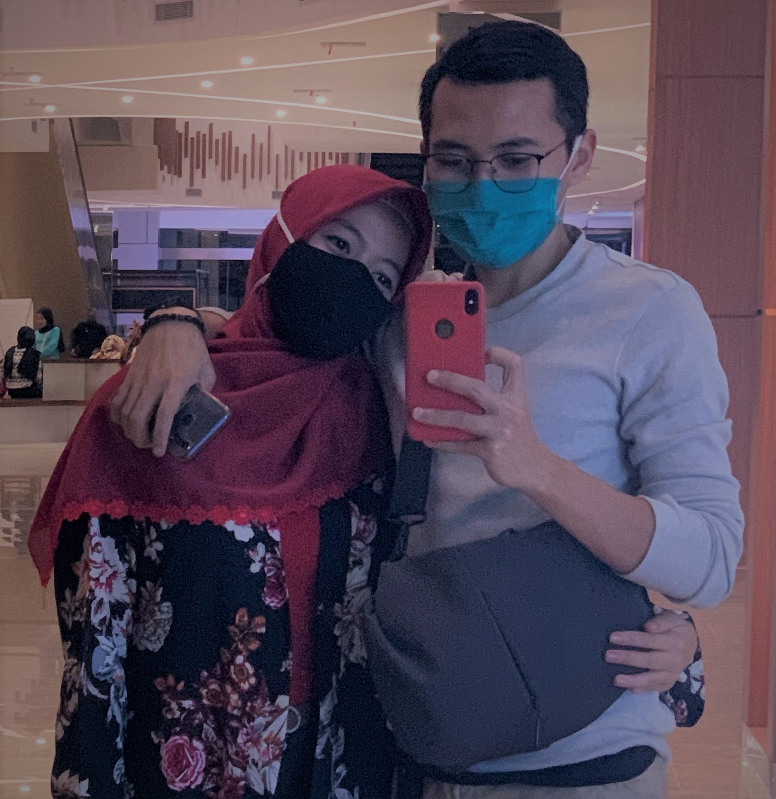

Halo Assalamualaikum geulis bageur pinter menak solehah kanyaah aa nu unyu-unyu :) selamat ulang
tahun yang ke 20 sayang, semoga dengan bertambah nya umur ayank yang ke 20 tahun ini bisa semakin
bahagia lagi, panjang umur, sehat selalu, banyak rejeki dan berkah, harapan serta cita-cita nya
tercapai, lebih sabar lagi dalam menghadapi aa ehehe, dan ayank nya juga lebih tambah dewasa lagi,
dan yang pasti semoga selalu dalam Ridho Allah SWT, Aamiin Allahuma Aamiin.
Aa berharap dalam hubungan sekarang ini semoga kita bisa bareng-bareng selalu istiqomah di jalan
Allah SWT dan selalu di langgengkan, Aa sendiri masih jauh dari kata sempurna, mungkin gak akan
menjadi sempurna jika tanpa orang yang akan mendampingi Aa kelak sampai akhir hayat yang berharap
yaitu ayank seorang :), serta semoga niat ibadah kita berdua di beri kelancaran dari hal apapun.
Aa belum bisa ngasih apa-apa dan tak seromantis orang-orang, doa dan raga yang selalu berusaha dan
berusaha aa beri untuk bisa buat ayank bahagia, jangan lupa untuk selalu bersyukur
apapun yang kita punya dan yang kita dapat.
Love Always, Aa Pranasucitra ^,^ Emmmmwuach ...
